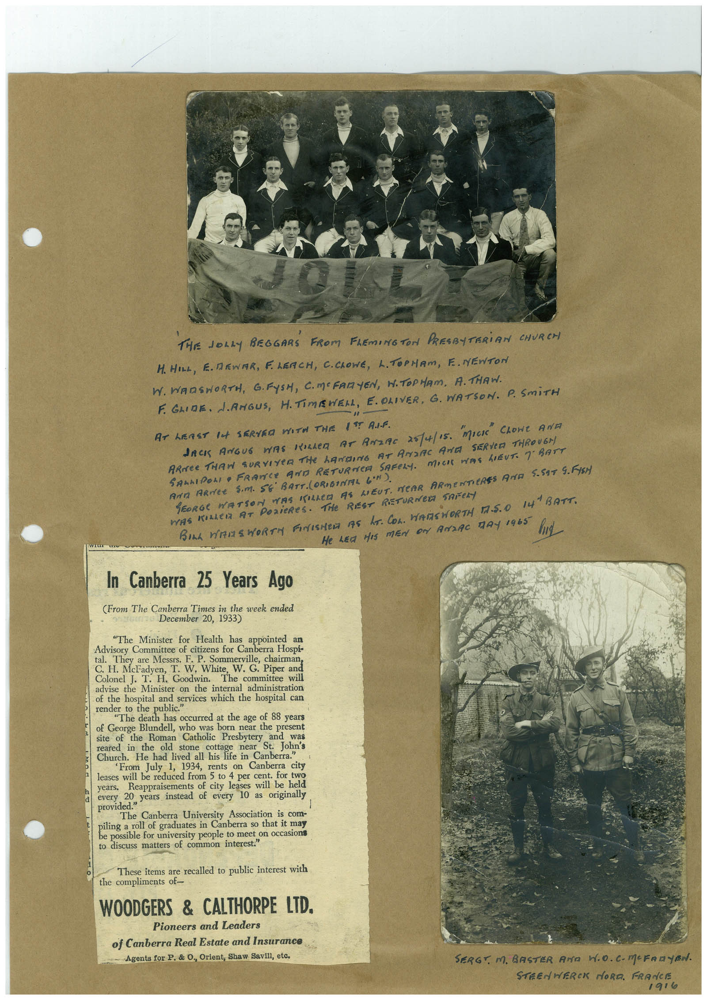

Book 1 · scan 042


Description
Transcription
Context
Review notes
Compare the machine draft with the scan. Handwriting and names need human review.
Artifacts
Edit the artifacts field in this note’s frontmatter to change these records. This summary is generated.
B01-S042-A01 — Newspaper clipping, Photo & Handwritten note — Book 1, scan 042
Types: Newspaper clipping, Photo, Handwritten note
Scope: Whole scanned page; individual items can be split out during review.
Caption: Not mapped yet.
Caption source: Not recorded yet.
Caption status: unmapped
Machine transcription
THE JOLLY BEGGARS FROM FLEMING TON PRESBYTERiAN CHURCH H. HILL, E. REWAR, FLEACH, C.CROWE, L. TOPHAM, E. NEWTON W. WARSWORTH, G. FYSH, C.MCFARYEN, W.TOPHAM, A. THAW. F. GLIDE. LANGUS, H.TIMISWER, E. OLIVER, G. WATSON. P. SmiTH AT LEAST lA SERVEO WITH THE 1?T ALF. JACK ANGUE WAS KILLED AT ANZAC 25/4/15. ARMEe THAN SURVIYER THe hANDING AT ANDAC ArCA SERVED THROUGA SASHIPOLI• FRANCE AND RETURNER SAFELY. MICH WAS LIEUT. 7 BATT AND ARTEE SM. SE BATT. (ORIGINAL GIN). GEORGE WATSON WAS KILLER AS LIEUT. NEAR ARMENTERES AND 5.597 9. FISH WAS KALeR AT PORTeReS. THe REST RETURNED SAFeRY BILL WIZES WORTH FINISHED AS hE. COL. WASNORTH TZ.S.O I41 BATT. He LEd HIS MEN ON AMDAC TAY 1965 In Canberra 25 Years Ago (From The Canberra Times in the week ended December 20, 1933) "The Minister for Health has appointed an Advisory Committee of citizens for Canberra Hospi- al. They are Messrs. F. P. Sommerville, chairman C. H. McFadyen, T. W. White, W. G. Piper and Colonel J. T. H. Goodwin. The committee will advise the Minister on the internal administration of the hospital and services which the hospital car render to the public." "The death has occurred at the age of 88 years of George Blundell, who was born near the present site of the le ma stone cic Pee hear t Jobs reared in the old stone cottage Church. He had lived all his life in Canberra." From July 1, 1934, rents on Canberra city leases will be reduced from 5 to 4 per cent. for two years. Reappraisements of city leases will be held every 20- provided years instead of every 10 as originally The Canberra University Association is com- iling a roll of graduates in Canberra so that it may e possible for university people to meet on occasion to discuss matters of common interest." These items are recalled to public interest with the compliments of- WOODGERS & CALTHORPE LTD. Pioneers and Leaders of Canberra Real Estate and Insurance Agents for P. & O., Orient, Shaw Savill, etc. SERGY M. BASTER ANa H.O. C-MCFRayBH. STRENWERCK MORA. FRANCE 1916